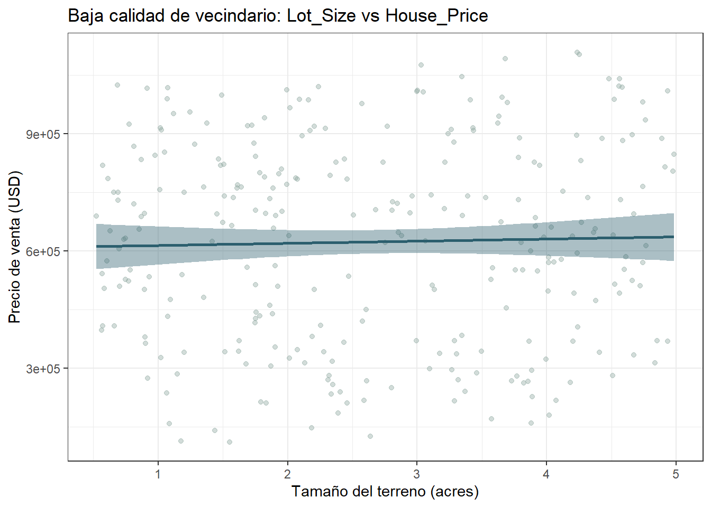
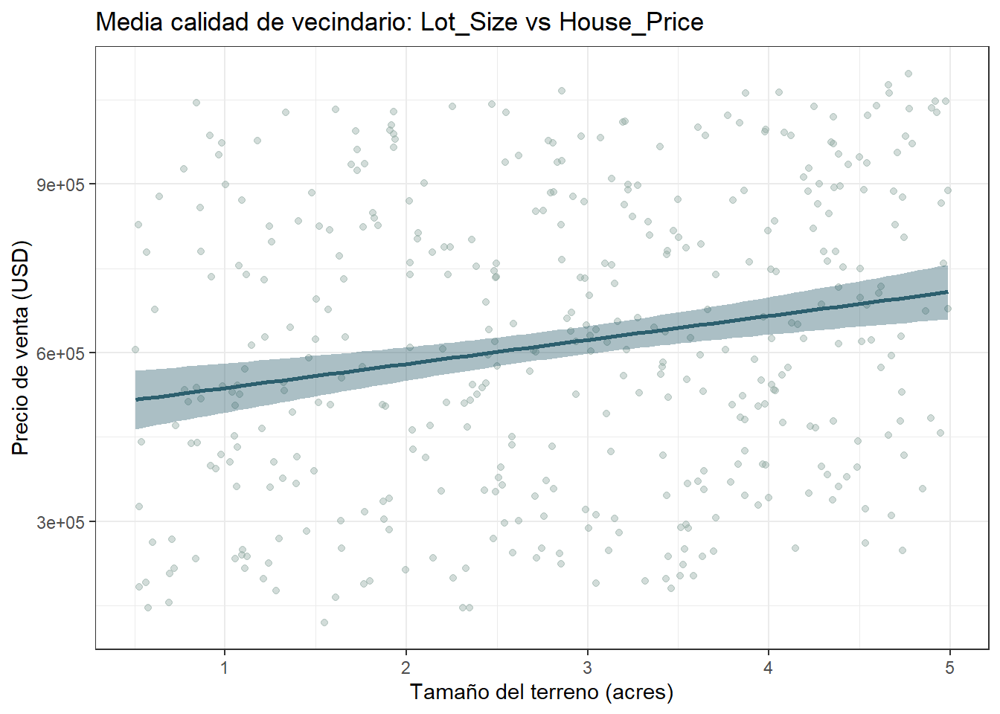
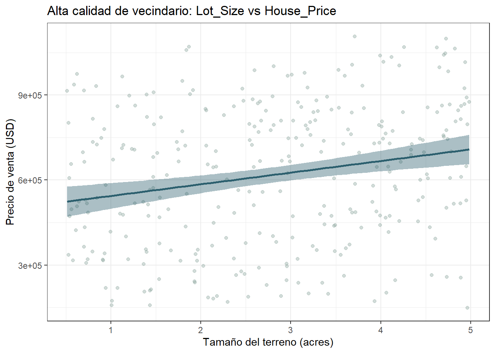
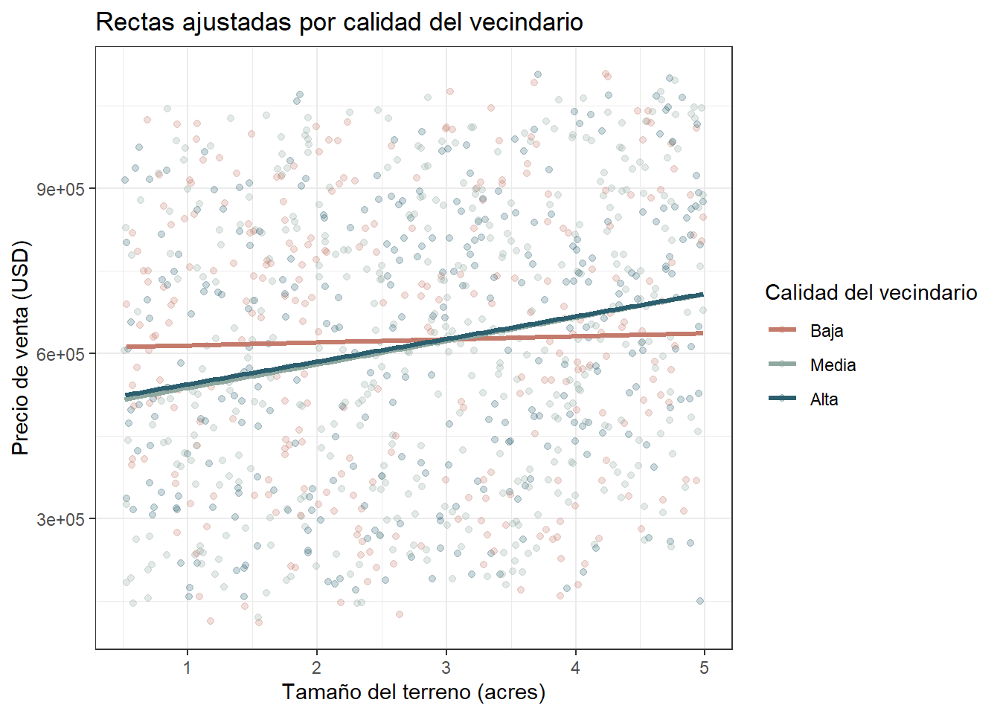

9 Comparación de la relación Lot_Size-House_Price según la calidad del vecindario
Para saber si la calidad del vecindario cambia la forma en que el tamaño del terreno se relaciona con el precio de la vivienda, hay que separar las observaciones según ese entorno y preguntarse, grupo por grupo, si la relación se sostiene o no.
data <- data %>%
mutate(
Calidad_Grupo = case_when(
Neighborhood_Quality <= 3 ~ "Baja",
Neighborhood_Quality <= 7 ~ "Media",
Neighborhood_Quality >= 8 ~ "Alta"
),
Calidad_Grupo = factor(Calidad_Grupo, levels = c("Baja", "Media", "Alta"))
)
data %>%
count(Calidad_Grupo) %>%
mutate(Rango = c("1 - 3", "4 - 7", "8 - 10"),
Porcentaje = paste0(round(100 * n / sum(n), 1), "%")) %>%
select(Calidad_Grupo, Rango, n, Porcentaje) %>%
kableExtra::kbl(row.names = FALSE,
col.names = c("Grupo de calidad", "Neighborhood_Quality", "Número de viviendas", "Porcentaje")) %>%
kableExtra::kable_styling(bootstrap_options = c("striped", "hover", "condensed", "bordered"),
full_width = FALSE)| Grupo de calidad | Neighborhood_Quality | Número de viviendas | Porcentaje |
|---|---|---|---|
| Baja | 1 - 3 | 281 | 28.1% |
| Media | 4 - 7 | 411 | 41.1% |
| Alta | 8 - 10 | 308 | 30.8% |
El grupo de calidad media concentra a más de la mitad de las viviendas (411), mientras que Baja (281) y Alta (308) quedan más equilibrados entre sí, una consecuencia esperable de agrupar una escala de 1 a 10 en solo tres bloques desiguales (1-3, 4-7, 8-10).
baja <- data %>% filter(Calidad_Grupo == "Baja")
media <- data %>% filter(Calidad_Grupo == "Media")
alta <- data %>% filter(Calidad_Grupo == "Alta")Con los tres grupos ya separados, empecemos por el extremo inferior de la escala y vayamos subiendo.
9.1 Grupo: Baja calidad
baja %>%
ggplot(aes(x = Lot_Size, y = House_Price)) +
geom_point(alpha = 0.4, color = "#8fa8a0") +
geom_smooth(method = "lm", formula = y ~ x, se = TRUE, color = "#2c5f6e", fill = "#2c5f6e") +
labs(title = "Baja calidad de vecindario: Lot_Size vs House_Price",
x = "Tamaño del terreno (acres)", y = "Precio de venta (USD)") +
theme_bw()
data.frame(r = round(with(baja, cor(Lot_Size, House_Price)), 4)) %>%
kableExtra::kbl(row.names = FALSE, col.names = "Coeficiente de correlación de Pearson (r)") %>%
kableExtra::kable_styling(bootstrap_options = c("striped", "hover", "condensed", "bordered"),
full_width = FALSE)| Coeficiente de correlación de Pearson (r) |
|---|
| 0.0283 |
De las 281 viviendas en vecindarios de baja calidad, la nube de puntos cubre todo el rango de precios (desde poco más de USD 110.000 hasta cerca de USD 1.1 millones) para cualquier tamaño de terreno, sin ninguna inclinación perceptible; la recta ajustada es prácticamente horizontal y su banda de confianza es muy ancha.
Antes de usar lm(), se calculan los coeficientes a mano con las fórmulas de mínimos cuadrados, \(\hat\beta_1 = S_{xy}/S_{xx}\) y \(\hat\beta_0 = \bar{y} - \hat\beta_1 \bar{x}\), para luego compararlos con los que entrega R.
X <- baja$Lot_Size
Y <- baja$House_Price
n_baja <- length(X)
x_bar <- mean(X); y_bar <- mean(Y)
Sxx_baja <- sum((X - x_bar)^2)
Sxy_baja <- sum((X - x_bar) * (Y - y_bar))
beta1_baja <- Sxy_baja / Sxx_baja
beta0_baja <- y_bar - beta1_baja * x_bar
modelo_baja <- lm(House_Price ~ Lot_Size, data = baja)
data.frame(
Parametro = c("Intercepto (β₀)", "Pendiente (β₁)"),
Manual = round(c(beta0_baja, beta1_baja), 2),
Lm = round(coef(modelo_baja), 2)
) %>%
kableExtra::kbl(row.names = FALSE,
col.names = c("Parámetro", "Cálculo manual", "lm()")) %>%
kableExtra::kable_styling(bootstrap_options = c("striped", "hover", "condensed", "bordered"),
full_width = FALSE)| Parámetro | Cálculo manual | lm() |
|---|---|---|
| Intercepto (β₀) | 608681.5 | 608681.5 |
| Pendiente (β₁) | 5519.1 | 5519.1 |
La siguiente tabla recoge los coeficientes estimados, con su error estándar, el estadístico t y el p-valor de la prueba sobre cada uno.
coeficientes_baja <- summary(modelo_baja)$coefficients
data.frame(
Termino = c("Intercepto", "Lot_Size"),
Estimacion = round(coeficientes_baja[, 1], 2),
Error_estandar = round(coeficientes_baja[, 2], 2),
Estadistico_t = round(coeficientes_baja[, 3], 2),
P_valor = format(coeficientes_baja[, 4], scientific = TRUE, digits = 3)
) %>%
kableExtra::kbl(row.names = FALSE,
col.names = c("Término", "Estimación", "Error estándar", "Estadístico t", "P-valor")) %>%
kableExtra::kable_styling(bootstrap_options = c("striped", "hover", "condensed", "bordered"),
full_width = FALSE)| Término | Estimación | Error estándar | Estadístico t | P-valor |
|---|---|---|---|---|
| Intercepto | 608681.5 | 34545.80 | 17.62 | 3.17e-47 |
| Lot_Size | 5519.1 | 11686.75 | 0.47 | 6.37e-01 |
El cálculo manual (\(\hat\beta_1\) = 5.519, \(\hat\beta_0\) = 608.681) coincide exactamente con lo que entrega lm(), confirmando que la fórmula de mínimos cuadrados y la función de R llegan al mismo resultado. El error estándar de \(\hat\beta_1\) (11.687) es más de dos veces mayor que el propio coeficiente, una primera señal de que esta pendiente no se va a sostener frente a la prueba de hipótesis.
confint(modelo_baja) %>%
round(2) %>%
kableExtra::kbl(col.names = c("Límite inferior (2.5%)", "Límite superior (97.5%)")) %>%
kableExtra::kable_styling(bootstrap_options = c("striped", "hover", "condensed", "bordered"),
full_width = FALSE)| Límite inferior (2.5%) | Límite superior (97.5%) | |
|---|---|---|
| (Intercept) | 540678.0 | 676685.01 |
| Lot_Size | -17486.3 | 28524.49 |
anova_baja <- anova(modelo_baja)
data.frame(
Fuente = c("Lot_Size", "Residuos"),
gl = anova_baja$Df,
Suma_cuadrados = format(anova_baja$`Sum Sq`, scientific = TRUE, digits = 4),
Cuadrado_medio = format(anova_baja$`Mean Sq`, scientific = TRUE, digits = 4),
F_valor = c(round(anova_baja$`F value`[1], 2), ""),
P_valor = c(format(anova_baja$`Pr(>F)`[1], scientific = TRUE, digits = 3), "")
) %>%
kableExtra::kbl(row.names = FALSE,
col.names = c("Fuente de variación", "gl", "Suma de cuadrados", "Cuadrado medio", "F", "P-valor")) %>%
kableExtra::kable_styling(bootstrap_options = c("striped", "hover", "condensed", "bordered"),
full_width = FALSE) %>%
kableExtra::scroll_box(width = "100%")| Fuente de variación | gl | Suma de cuadrados | Cuadrado medio | F | P-valor |
|---|---|---|---|---|---|
| Lot_Size | 1 | 1.452e+10 | 1.452e+10 | 0.22 | 6.37e-01 |
| Residuos | 279 | 1.816e+13 | 6.509e+10 |
El intervalo de confianza al 95% para \(\beta_1\) es (−17.486, 28.524), contiene el cero, y la prueba de hipótesis no se rechaza (t = 0.47; p = 0.637). La tabla ANOVA llega a la misma conclusión desde otro ángulo (F = 0.22; p = 0.637). En el grupo de vecindarios de baja calidad, no hay evidencia de que el tamaño del terreno tenga ningún efecto sobre el precio.
Con la baja calidad ya resuelta, sin relación alguna, la pregunta natural es si subir un escalón en la escala cambia algo.
9.2 Grupo: Media calidad
media %>%
ggplot(aes(x = Lot_Size, y = House_Price)) +
geom_point(alpha = 0.4, color = "#8fa8a0") +
geom_smooth(method = "lm", formula = y ~ x, se = TRUE, color = "#2c5f6e", fill = "#2c5f6e") +
labs(title = "Media calidad de vecindario: Lot_Size vs House_Price",
x = "Tamaño del terreno (acres)", y = "Precio de venta (USD)") +
theme_bw()
data.frame(r = round(with(media, cor(Lot_Size, House_Price)), 4)) %>%
kableExtra::kbl(row.names = FALSE, col.names = "Coeficiente de correlación de Pearson (r)") %>%
kableExtra::kable_styling(bootstrap_options = c("striped", "hover", "condensed", "bordered"),
full_width = FALSE)| Coeficiente de correlación de Pearson (r) |
|---|
| 0.2082 |
En este grupo, el más numeroso de los tres (411 viviendas), sí empieza a insinuarse a simple vista una leve tendencia ascendente en la nube de puntos, aunque con mucha dispersión alrededor de ella. La correlación (r = 0.208) es siete veces más alta que la del grupo de baja calidad, aunque sigue siendo una asociación débil.
X <- media$Lot_Size
Y <- media$House_Price
n_media <- length(X)
x_bar <- mean(X); y_bar <- mean(Y)
Sxx_media <- sum((X - x_bar)^2)
Sxy_media <- sum((X - x_bar) * (Y - y_bar))
beta1_media <- Sxy_media / Sxx_media
beta0_media <- y_bar - beta1_media * x_bar
modelo_media <- lm(House_Price ~ Lot_Size, data = media)
data.frame(
Parametro = c("Intercepto (β₀)", "Pendiente (β₁)"),
Manual = round(c(beta0_media, beta1_media), 2),
Lm = round(coef(modelo_media), 2)
) %>%
kableExtra::kbl(row.names = FALSE,
col.names = c("Parámetro", "Cálculo manual", "lm()")) %>%
kableExtra::kable_styling(bootstrap_options = c("striped", "hover", "condensed", "bordered"),
full_width = FALSE)| Parámetro | Cálculo manual | lm() |
|---|---|---|
| Intercepto (β₀) | 494802.92 | 494802.92 |
| Pendiente (β₁) | 42688.43 | 42688.43 |
coeficientes_media <- summary(modelo_media)$coefficients
data.frame(
Termino = c("Intercepto", "Lot_Size"),
Estimacion = round(coeficientes_media[, 1], 2),
Error_estandar = round(coeficientes_media[, 2], 2),
Estadistico_t = round(coeficientes_media[, 3], 2),
P_valor = format(coeficientes_media[, 4], scientific = TRUE, digits = 3)
) %>%
kableExtra::kbl(row.names = FALSE,
col.names = c("Término", "Estimación", "Error estándar", "Estadístico t", "P-valor")) %>%
kableExtra::kable_styling(bootstrap_options = c("striped", "hover", "condensed", "bordered"),
full_width = FALSE)| Término | Estimación | Error estándar | Estadístico t | P-valor |
|---|---|---|---|---|
| Intercepto | 494802.92 | 30927.36 | 16.0 | 4.33e-45 |
| Lot_Size | 42688.43 | 9917.48 | 4.3 | 2.10e-05 |
De nuevo, el cálculo manual (\(\hat\beta_1\) = 42.688, \(\hat\beta_0\) = 494.803) coincide con lm(). A diferencia del grupo anterior, acá el error estándar (9.917) es notablemente menor que el propio coeficiente: la pendiente empieza a verse “grande” en relación con su margen de error, anticipando que sí va a resultar significativa.
confint(modelo_media) %>%
round(2) %>%
kableExtra::kbl(col.names = c("Límite inferior (2.5%)", "Límite superior (97.5%)")) %>%
kableExtra::kable_styling(bootstrap_options = c("striped", "hover", "condensed", "bordered"),
full_width = FALSE)| Límite inferior (2.5%) | Límite superior (97.5%) | |
|---|---|---|
| (Intercept) | 434006.50 | 555599.34 |
| Lot_Size | 23192.83 | 62184.03 |
anova_media <- anova(modelo_media)
data.frame(
Fuente = c("Lot_Size", "Residuos"),
gl = anova_media$Df,
Suma_cuadrados = format(anova_media$`Sum Sq`, scientific = TRUE, digits = 4),
Cuadrado_medio = format(anova_media$`Mean Sq`, scientific = TRUE, digits = 4),
F_valor = c(round(anova_media$`F value`[1], 2), ""),
P_valor = c(format(anova_media$`Pr(>F)`[1], scientific = TRUE, digits = 3), "")
) %>%
kableExtra::kbl(row.names = FALSE,
col.names = c("Fuente de variación", "gl", "Suma de cuadrados", "Cuadrado medio", "F", "P-valor")) %>%
kableExtra::kable_styling(bootstrap_options = c("striped", "hover", "condensed", "bordered"),
full_width = FALSE) %>%
kableExtra::scroll_box(width = "100%")| Fuente de variación | gl | Suma de cuadrados | Cuadrado medio | F | P-valor |
|---|---|---|---|---|---|
| Lot_Size | 1 | 1.193e+12 | 1.193e+12 | 18.53 | 2.1e-05 |
| Residuos | 409 | 2.634e+13 | 6.440e+10 |
El intervalo de confianza al 95% para \(\beta_1\) (23.193 a 62.184) ya no incluye el cero, y la prueba de hipótesis se rechaza con claridad (t = 4.30; p < 0.0001; confirmado por la tabla ANOVA con F = 18.53, misma p). En el grupo de calidad media, por cada acre adicional de terreno, el precio aumenta en promedio USD 42.688, un contraste total frente a la ausencia de efecto del grupo anterior.
9.3 Grupo: Alta calidad
alta %>%
ggplot(aes(x = Lot_Size, y = House_Price)) +
geom_point(alpha = 0.4, color = "#8fa8a0") +
geom_smooth(method = "lm", formula = y ~ x, se = TRUE, color = "#2c5f6e", fill = "#2c5f6e") +
labs(title = "Alta calidad de vecindario: Lot_Size vs House_Price",
x = "Tamaño del terreno (acres)", y = "Precio de venta (USD)") +
theme_bw()
data.frame(r = round(with(alta, cor(Lot_Size, House_Price)), 4)) %>%
kableExtra::kbl(row.names = FALSE, col.names = "Coeficiente de correlación de Pearson (r)") %>%
kableExtra::kable_styling(bootstrap_options = c("striped", "hover", "condensed", "bordered"),
full_width = FALSE)| Coeficiente de correlación de Pearson (r) |
|---|
| 0.2229 |
El patrón visual en este grupo (308 viviendas) es prácticamente indistinguible del de calidad media: una leve inclinación ascendente rodeada de bastante dispersión. La correlación (r = 0.223) es, de hecho, la más alta de los tres grupos, aunque por un margen muy estrecho frente a la de calidad media.
X <- alta$Lot_Size
Y <- alta$House_Price
n_alta <- length(X)
x_bar <- mean(X); y_bar <- mean(Y)
Sxx_alta <- sum((X - x_bar)^2)
Sxy_alta <- sum((X - x_bar) * (Y - y_bar))
beta1_alta <- Sxy_alta / Sxx_alta
beta0_alta <- y_bar - beta1_alta * x_bar
modelo_alta <- lm(House_Price ~ Lot_Size, data = alta)
data.frame(
Parametro = c("Intercepto (β₀)", "Pendiente (β₁)"),
Manual = round(c(beta0_alta, beta1_alta), 2),
Lm = round(coef(modelo_alta), 2)
) %>%
kableExtra::kbl(row.names = FALSE,
col.names = c("Parámetro", "Cálculo manual", "lm()")) %>%
kableExtra::kable_styling(bootstrap_options = c("striped", "hover", "condensed", "bordered"),
full_width = FALSE)| Parámetro | Cálculo manual | lm() |
|---|---|---|
| Intercepto (β₀) | 503107.12 | 503107.12 |
| Pendiente (β₁) | 41089.92 | 41089.92 |
coeficientes_alta <- summary(modelo_alta)$coefficients
data.frame(
Termino = c("Intercepto", "Lot_Size"),
Estimacion = round(coeficientes_alta[, 1], 2),
Error_estandar = round(coeficientes_alta[, 2], 2),
Estadistico_t = round(coeficientes_alta[, 3], 2),
P_valor = format(coeficientes_alta[, 4], scientific = TRUE, digits = 3)
) %>%
kableExtra::kbl(row.names = FALSE,
col.names = c("Término", "Estimación", "Error estándar", "Estadístico t", "P-valor")) %>%
kableExtra::kable_styling(bootstrap_options = c("striped", "hover", "condensed", "bordered"),
full_width = FALSE)| Término | Estimación | Error estándar | Estadístico t | P-valor |
|---|---|---|---|---|
| Intercepto | 503107.12 | 31784.92 | 15.83 | 1.22e-41 |
| Lot_Size | 41089.92 | 10273.14 | 4.00 | 7.96e-05 |
El cálculo manual (\(\hat\beta_1\) = 41.090, \(\hat\beta_0\) = 503.107) vuelve a coincidir con lm(). Tanto la magnitud de la pendiente como su error estándar (10.273) son muy similares a los del grupo de calidad media, lo que ya anticipa un resultado de significancia comparable.
confint(modelo_alta) %>%
round(2) %>%
kableExtra::kbl(col.names = c("Límite inferior (2.5%)", "Límite superior (97.5%)")) %>%
kableExtra::kable_styling(bootstrap_options = c("striped", "hover", "condensed", "bordered"),
full_width = FALSE)| Límite inferior (2.5%) | Límite superior (97.5%) | |
|---|---|---|
| (Intercept) | 440562.44 | 565651.79 |
| Lot_Size | 20874.97 | 61304.87 |
anova_alta <- anova(modelo_alta)
data.frame(
Fuente = c("Lot_Size", "Residuos"),
gl = anova_alta$Df,
Suma_cuadrados = format(anova_alta$`Sum Sq`, scientific = TRUE, digits = 4),
Cuadrado_medio = format(anova_alta$`Mean Sq`, scientific = TRUE, digits = 4),
F_valor = c(round(anova_alta$`F value`[1], 2), ""),
P_valor = c(format(anova_alta$`Pr(>F)`[1], scientific = TRUE, digits = 3), "")
) %>%
kableExtra::kbl(row.names = FALSE,
col.names = c("Fuente de variación", "gl", "Suma de cuadrados", "Cuadrado medio", "F", "P-valor")) %>%
kableExtra::kable_styling(bootstrap_options = c("striped", "hover", "condensed", "bordered"),
full_width = FALSE) %>%
kableExtra::scroll_box(width = "100%")| Fuente de variación | gl | Suma de cuadrados | Cuadrado medio | F | P-valor |
|---|---|---|---|---|---|
| Lot_Size | 1 | 9.20e+11 | 9.200e+11 | 16 | 7.96e-05 |
| Residuos | 306 | 1.76e+13 | 5.751e+10 |
El intervalo de confianza (20.875 a 61.305) tampoco incluye el cero, y la prueba de hipótesis se rechaza (t = 4.00; p < 0.001; ANOVA: F = 16.00, misma p). En el grupo de calidad alta, por cada acre adicional de terreno, el precio aumenta en promedio USD 41.090, una magnitud casi idéntica a la del grupo de calidad media, y no es la pendiente más alta de los tres como anticiparía la teoría.
Con los tres grupos resueltos por separado, es momento de ponerlos uno al lado del otro y ver qué tan distinto es realmente el panorama entre ellos.
9.4 Comparación entre los tres grupos
ic_baja <- confint(modelo_baja)[2, ]
ic_media <- confint(modelo_media)[2, ]
ic_alta <- confint(modelo_alta)[2, ]
p_baja <- summary(modelo_baja)$coefficients[2, 4]
p_media <- summary(modelo_media)$coefficients[2, 4]
p_alta <- summary(modelo_alta)$coefficients[2, 4]
data.frame(
Grupo = c("Baja", "Media", "Alta"),
n = c(n_baja, n_media, n_alta),
r = round(c(cor(baja$Lot_Size, baja$House_Price),
cor(media$Lot_Size, media$House_Price),
cor(alta$Lot_Size, alta$House_Price)), 4),
beta1_hat = round(c(beta1_baja, beta1_media, beta1_alta), 2),
IC_95 = c(paste0("(", round(ic_baja[1], 1), " ; ", round(ic_baja[2], 1), ")"),
paste0("(", round(ic_media[1], 1), " ; ", round(ic_media[2], 1), ")"),
paste0("(", round(ic_alta[1], 1), " ; ", round(ic_alta[2], 1), ")")),
P_valor = format(c(p_baja, p_media, p_alta), scientific = TRUE, digits = 3),
R2 = round(c(summary(modelo_baja)$r.squared,
summary(modelo_media)$r.squared,
summary(modelo_alta)$r.squared), 4),
Significativo = ifelse(c(p_baja, p_media, p_alta) < 0.05, "Sí", "No")
) %>%
kableExtra::kbl(row.names = FALSE,
col.names = c("Grupo", "n", "r", "β₁ estimada", "IC 95% para β₁", "P-valor", "R²", "¿Significativo?")) %>%
kableExtra::kable_styling(bootstrap_options = c("striped", "hover", "condensed", "bordered"),
full_width = FALSE) %>%
kableExtra::scroll_box(width = "100%")| Grupo | n | r | β₁ estimada | IC 95% para β₁ | P-valor | R² | ¿Significativo? |
|---|---|---|---|---|---|---|---|
| Baja | 281 | 0.0283 | 5519.10 | (-17486.3 ; 28524.5) | 6.37e-01 | 0.0008 | No |
| Media | 411 | 0.2082 | 42688.43 | (23192.8 ; 62184) | 2.10e-05 | 0.0433 | Sí |
| Alta | 308 | 0.2229 | 41089.92 | (20875 ; 61304.9) | 7.96e-05 | 0.0497 | Sí |
Para ver la comparación de forma gráfica, se superponen las tres rectas ajustadas sobre la misma nube de puntos.
data %>%
ggplot(aes(x = Lot_Size, y = House_Price, color = Calidad_Grupo)) +
geom_point(alpha = 0.25) +
geom_smooth(method = "lm", formula = y ~ x, se = FALSE, linewidth = 1.2) +
scale_color_manual(values = c("Baja" = "#c47b6b", "Media" = "#8fa8a0", "Alta" = "#2c5f6e")) +
labs(title = "Rectas ajustadas por calidad del vecindario",
x = "Tamaño del terreno (acres)", y = "Precio de venta (USD)",
color = "Calidad del vecindario") +
theme_bw()
Primero, se ve un quiebre bien marcado entre el grupo de baja calidad y los otros dos: en Baja, la pendiente ni siquiera se distingue de cero (p = 0.637) y su recta queda prácticamente plana; en Media y Alta, la pendiente sí es significativa, con p-valores muy por debajo de 0.001 en ambos casos. Segundo, entre Media y Alta se podría decir que se repite el mismo comportamiento: pendientes de magnitud parecida (USD 42.688 y USD 41.090 por acre), rectas casi paralelas, intervalos de confianza que se solapan casi por completo, y R² igual de bajos (4.3% y 5.0%). No hay indicio de que la relación se vuelva más fuerte a medida que sube la calidad del vecindario.